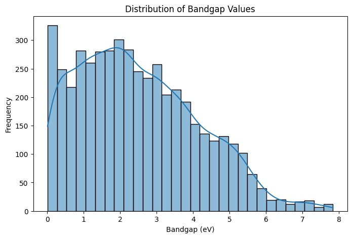
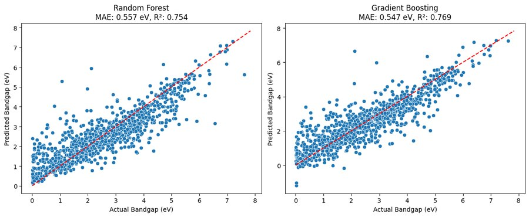
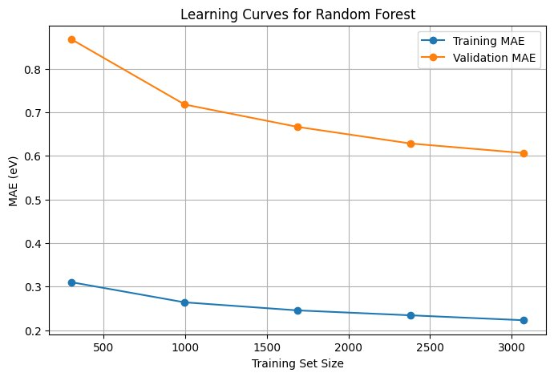

Machine Learning for Materials Science
Two coursework projects from AI for Materials, applying regression and CNN architectures to materials problems: predicting semiconductor bandgaps for solar water-splitting, and segmenting precipitate particles in metallographic images.
Part 1: Bandgap Prediction for Water-Splitting Materials
Photoelectrochemical water splitting needs a semiconductor with a bandgap in a specific window, large enough to drive the reaction thermodynamically, small enough to absorb useful sunlight. The target range is 1.5 to 2.5 eV. The goal was to train a model on known materials and use it to screen 200 unlabeled candidates for promising water-splitting materials.
Training data came from 4,800 materials pulled from the Materials Project database, with a bandgap distribution averaging 2.50 eV (std. dev. 1.64 eV). Raw structural columns (density, volume per atom, space group, crystal system) were combined with composition-based descriptors generated via matminer, Magpie elemental property statistics and oxidation-state features, then one-hot encoded and assembled into a 148-feature matrix.

I compared two ensemble tree methods, Random Forest and Gradient Boosted Trees, both well suited to a high-dimensional, noisy feature space without assuming a linear relationship between composition and bandgap. Hyperparameters were tuned via 5-fold grid search cross-validation for each.
| Model | MAE (eV) | RMSE (eV) | R² |
|---|---|---|---|
| Random Forest | 0.557 | 0.782 | 0.754 |
| Gradient Boosting (best) | 0.547 | 0.757 | 0.769 |


The learning curve showed a persistent gap between training and validation error, low bias but meaningful variance, indicating the model was overfitting somewhat to the training distribution. That mattered for how I framed the results: I flagged in my writeup that predictions likely wouldn't generalize cleanly to materials outside the Materials Project database, and that any candidate list should be treated as a starting point for experimental follow-up, not a final answer.
Applying the trained model to 200 unlabeled candidate materials identified 68 with predicted bandgaps in the 1.5–2.5 eV target window. Ranking by closeness to the ideal 2.0 eV midpoint surfaced candidates like KMg₃V₃CuO₁₂ and Cr₂WO₆, both landing within 0.02 eV of the target.
Part 2: CNN Segmentation of Metallographic Images
A companion project applying a different architecture to a different kind of materials data: rather than predicting a property from composition, this used a convolutional encoder-decoder to segment precipitate particles directly out of noisy micrograph images, the same category of task as identifying second-phase particles in a real metallographic image.
Working from 2,000 synthetic 128×128 grayscale micrographs, each containing 5–20 circular precipitates against a noisy metal-matrix background, I built a three-stage CNN encoder-decoder in PyTorch. The encoder progressively downsamples through three Conv2d + ReLU + MaxPool stages (1→16→32→64 channels) to extract features, and the decoder upsamples back to a full-resolution, per-pixel segmentation mask trained with BCEWithLogitsLoss over 30 epochs.
Training and validation loss both decreased steadily and converged to similarly low values, in the 0.04–0.08 BCE loss range, by the final epoch, with only a small gap between the two curves, indicating the model learned to generalize rather than memorize the training set. Visualizing the learned first-layer filters showed the network had picked up edge- and blob-detecting kernels, consistent with what a CNN should learn for a particle-detection task.
The assignment also included conceptual analysis connecting this architecture back to fully connected autoencoders, covering why convolutional layers are necessary for image-scale data (parameter explosion and loss of spatial structure in a fully connected equivalent), the numerical stability tradeoffs of BCEWithLogitsLoss versus separate sigmoid and BCE, and how padding choices affect feature map dimensions through a multi-stage encoder.